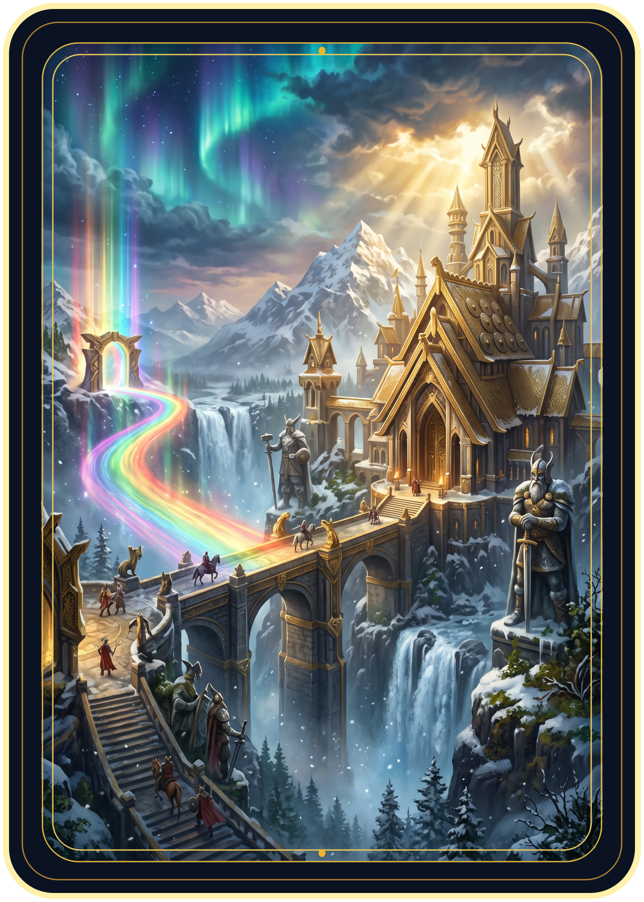
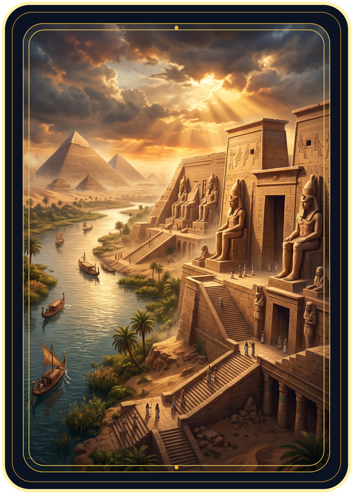
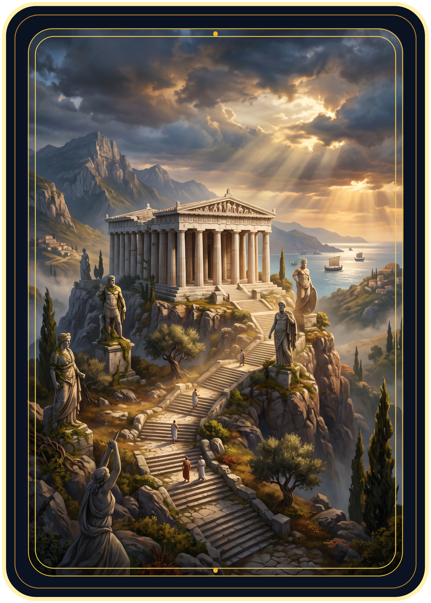

Asgard
Enquanto este Local estiver ativo, todos os nórdicos recebem +2 de poder, nos dois lados do campo.
O Local ativo beneficia os dois jogadores e soma com o Terreno. Um Local por rodada. Abrir o jogo

Enquanto este Local estiver ativo, todos os nórdicos recebem +2 de poder, nos dois lados do campo.

Enquanto este Local estiver ativo, todos os egípcios recebem +2 de poder, nos dois lados do campo.

Enquanto este Local estiver ativo, todos os gregos recebem +2 de poder, nos dois lados do campo.